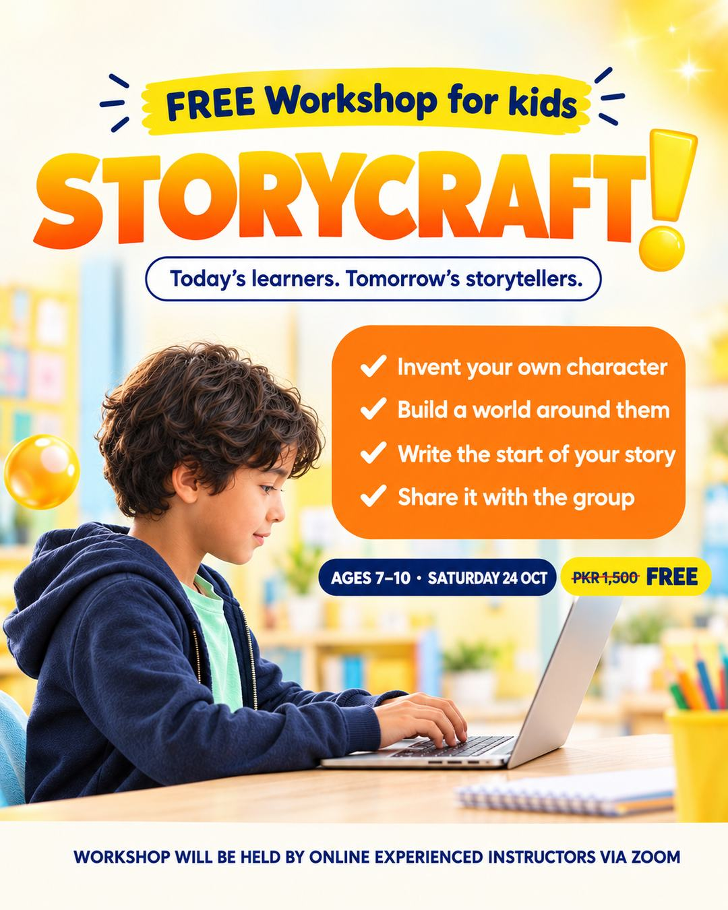
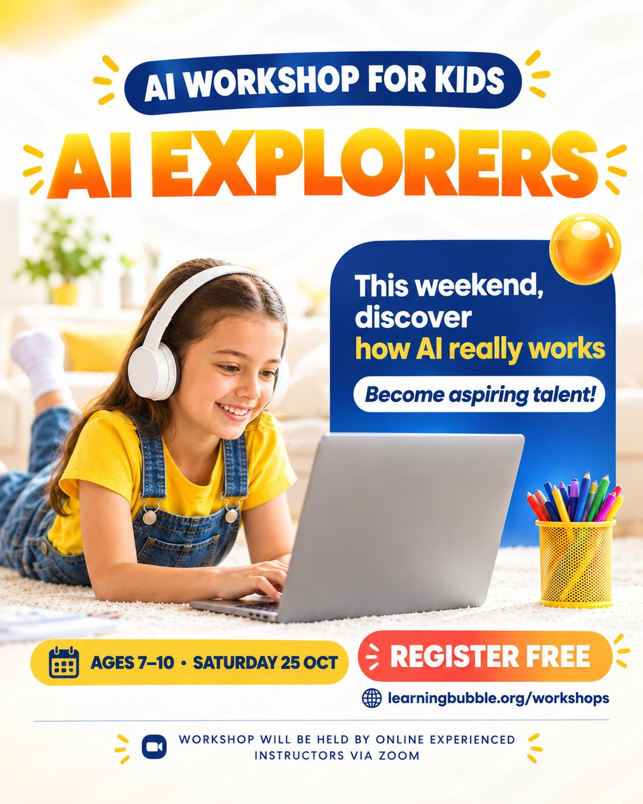
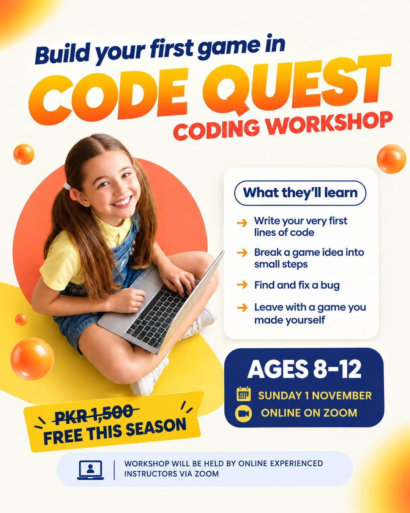

Short answer: yes, there are genuinely free online workshops for kids in Pakistan this season. Learning Bubble is running three live, beginner-friendly sessions on Zoom — a creative writing workshop on Saturday 24 October, an AI workshop for kids on Sunday 25 October, and a kids coding workshop on Sunday 1 November 2026. Each normally costs PKR 1,500 per child; this season they are free, with no card or payment needed to register.
This guide explains what happens in each workshop, which one suits which child, what you need at home, and how to register through our contact form or WhatsApp. If you already know which one you want, skip straight to how to register.
The three free workshops at a glance
All three run live on Zoom, are taught by experienced online instructors, and are designed for complete beginners. Children who attend the full session receive a certificate of participation.
| Workshop | Subject | Date | Ages | Price |
|---|---|---|---|---|
| StoryCraft | Creative writing | Saturday 24 October 2026 | 7–10 | |
| AI Explorers | Artificial intelligence | Sunday 25 October 2026 | 7–10 | |
| Code Quest | Coding & game-making | Sunday 1 November 2026 | 8–12 |
StoryCraft — a free creative writing workshop for kids (ages 7–10)

Plenty of children enjoy stories but freeze in front of a blank page. StoryCraft is built around that moment. Instead of being asked to "write a story", children build one piece at a time, so by the time they start writing they already know who their story is about and where it happens.
- Invent a character with a goal, a flaw and a secret — the three things that make a reader care.
- Build a world around them, using detail that makes a setting feel real rather than a list of adjectives.
- Write an opening that makes a reader want to know what happens next.
- Share it with a small, friendly group and hear what worked.
Best for: children aged 7–10 who like books, make up games or characters, or who find school writing tasks a chore. If your child enjoys it, the full Creative Writing course for ages 8–10 runs all year.
AI Explorers — a free AI workshop for kids (ages 7–10)

Children are already meeting AI — in voice assistants, in apps, in homework help. What most of them have not had is anyone explaining what it actually is. AI Explorers treats artificial intelligence as something to understand, not something to be impressed or frightened by.
- What AI is — and what it is not. Why it can sound confident and still be wrong.
- How a computer learns from examples, shown in a way a seven-year-old can follow.
- Using AI tools safely and with good judgement, including what not to share.
- A hands-on activity to try together as a group.
Best for: curious 7–10 year olds who ask "how does it know that?". No programming is involved. For older children who want to go further, our Artificial Intelligence for Kids course covers how these tools work and how to use them honestly in schoolwork.
Code Quest — a free coding workshop for kids (ages 8–12)

The fastest way to make a child believe they can code is to let them build something they can play. Code Quest skips the theory lecture and goes straight to a small game, introducing each idea at the moment it is needed.
- Break a game idea into small steps a computer can follow — the core skill behind all programming.
- Write and run their first lines of code.
- Find and fix a bug and watch the game improve.
- Leave with a game they made themselves.
Best for: 8–12 year olds who love games, Lego or taking things apart, and complete beginners who have never written code. Not sure your child is ready? Our guide on what age a child should start coding explains the signs. The year-round next step is Fun with Coding.
Which free workshop should your child choose?
Each child can join one workshop this season, so it is worth picking the right one. Go by what your child already enjoys rather than what you think they should learn — interest does most of the work in a single session.
- Loves stories, drawing or pretend play? StoryCraft (ages 7–10).
- Always asking how apps and gadgets work? AI Explorers (ages 7–10).
- Lives for games, puzzles and building things? Code Quest (ages 8–12).
- Aged 11 or 12? Code Quest is the one that fits the age range.
Still unsure? Tell us your child's age and interests on the contact page or WhatsApp and we will point you to the best fit.
What you need for an online workshop on Zoom
- A laptop, tablet or computer — a laptop is easiest for Code Quest.
- A stable internet connection and the Zoom app installed beforehand.
- A quiet spot, plus a notebook and pencil for StoryCraft.
- For younger children, a parent nearby for the first few minutes to help with sound and camera.
Joining details are sent once your child's place is confirmed. Log in five minutes early so the session starts on time.
How to register for a free workshop
We do not have an online registration form yet, so registration is personal and takes a minute:
- Send a message through our contact form or on WhatsApp (+92 321 2481610).
- Include your child's name, age and the workshop you want — StoryCraft, AI Explorers or Code Quest.
- We confirm the place and send the Zoom joining details before the day.
Places are kept small so every child gets attention, so it is worth registering early.
What makes a free online workshop worth your child's time
"Free" can mean a recorded video, a sales pitch, or a crowded call where nobody speaks. Before signing up for any free online class for kids — ours included — it is worth checking a few things:
- Is it live? A real teacher who can notice a stuck child matters far more than production value.
- Does the child make something? A character, an idea, a game — something to show at the end, not just something watched.
- Is it pitched at the right age? A clear age range usually means the activities were designed for it.
- Is there pressure afterwards? There should be none. After our workshops we will tell you about the matching course if your child enjoyed it, and you can book a free demo class — nothing is automatic and there is no obligation to enrol.
For a longer checklist, read how to choose an online course for your child, and for the evidence behind live teaching, see whether online learning is actually effective for kids.
Frequently asked questions
Are there free online workshops for kids in Pakistan?
Yes. StoryCraft (creative writing, ages 7–10) runs on Saturday 24 October 2026, AI Explorers
(ages 7–10) on Sunday 25 October 2026 and Code Quest (coding, ages 8–12) on Sunday 1 November
2026, all live on Zoom and free this season.
How do I register my child?
Send your child's name, age and chosen workshop through the contact page
or on WhatsApp at +92 321 2481610. We confirm the place and send the joining details.
What age is right for a kids coding workshop?
Most children are ready for a beginner coding workshop from around 8. Code Quest is designed for
ages 8–12 and needs no experience.
Is an AI workshop suitable for a 7-year-old?
Yes, when it is taught as AI literacy rather than programming. AI Explorers covers what AI is,
how it learns and how to use it safely, through a hands-on group activity.
What does my child need to join?
A laptop, tablet or computer with a stable connection and Zoom installed, plus a quiet spot.
Can my child join more than one workshop?
Each child can take part in one workshop this season — pick the one they are most excited
about.
Do children get a certificate?
Yes. Children who attend the full workshop receive a certificate of participation.
Written by the Learning Bubble teaching team. Dates and details are correct as of 8 October 2026 — the workshops page always has the latest. Questions? Ask us — we would rather give you a straight answer than have you guess.